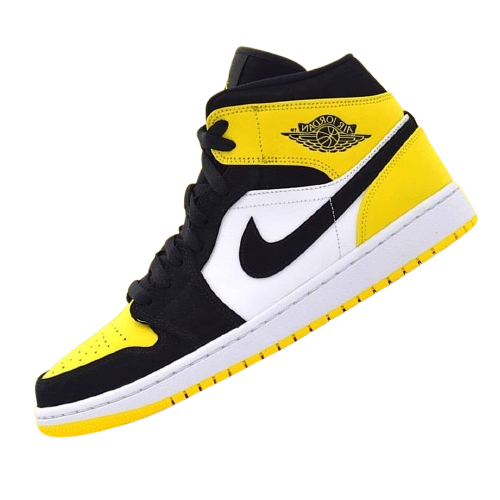
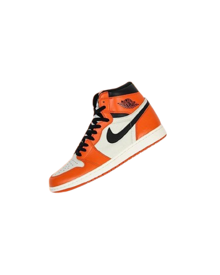
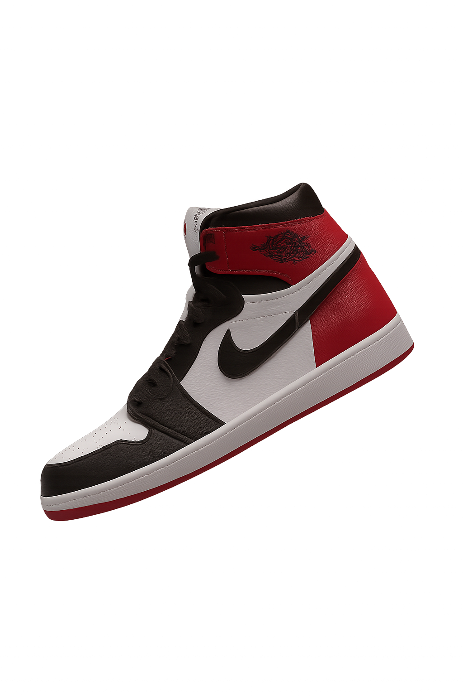

Nike Mid SE
O Nike Mid SE é uma edição especial dos tênis de cano médio da Nike, criada para
trazer cores exclusivas, materiais diferenciados e visual mais estilizado. O modelo mais famoso
nessa linha é o Air Jordan 1 Mid SE, que mantém o design clássico, mas adiciona detalhes
premium, melhor acabamento e combinações únicas. Ele é pensado para quem quer conforto, estilo
urbano e um toque de exclusividade no dia a dia.
NIKE

NiKE High OG
O Air Jordan 1 High OG (também conhecido como Nike High OG) é um dos tênis mais
icônicos da Nike e da Jordan Brand. Lançado originalmente em 1985, ele se destaca por sua
silhueta de cano alto, acabamento premium em couro e o clássico design que marcou a história do
basquete e da cultura sneaker.
NIKE

NiKE Retro High OG
O Nike Tênis Masculino Air Jordan 1 Retro High OG Preto/Branco e seus pares da
linha Retro High OG fazem parte da família clássica da Nike, especialmente da linha Air Jordan
1. Esse tênis traz de volta o design original de cano alto (high top), com detalhes fiéis às
versões dos anos 1980 — incluindo couro premium, o logo Nike Air na língua e amortecimento leve
com tecnologia Air.
NIKE
